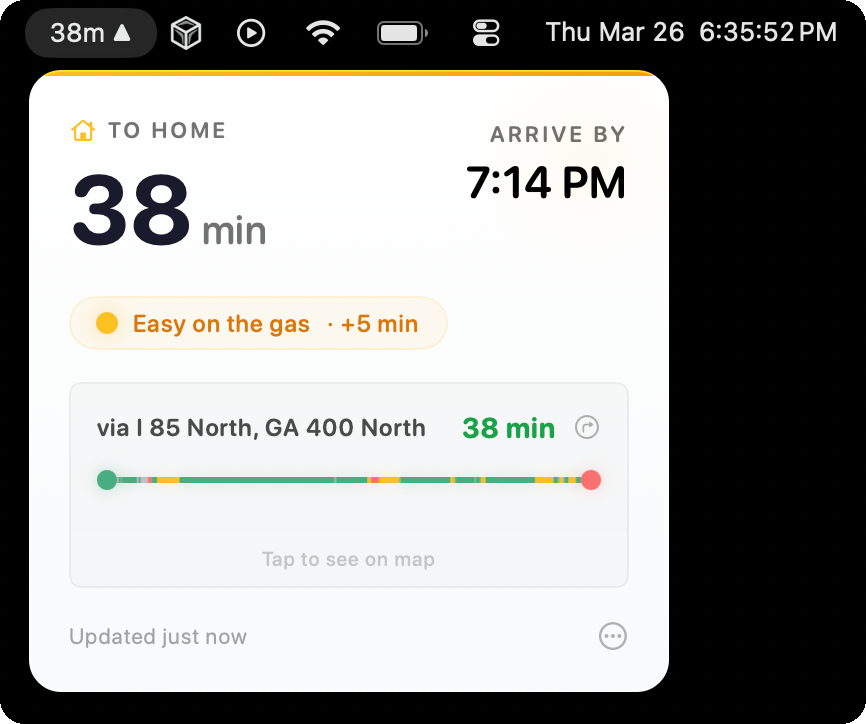
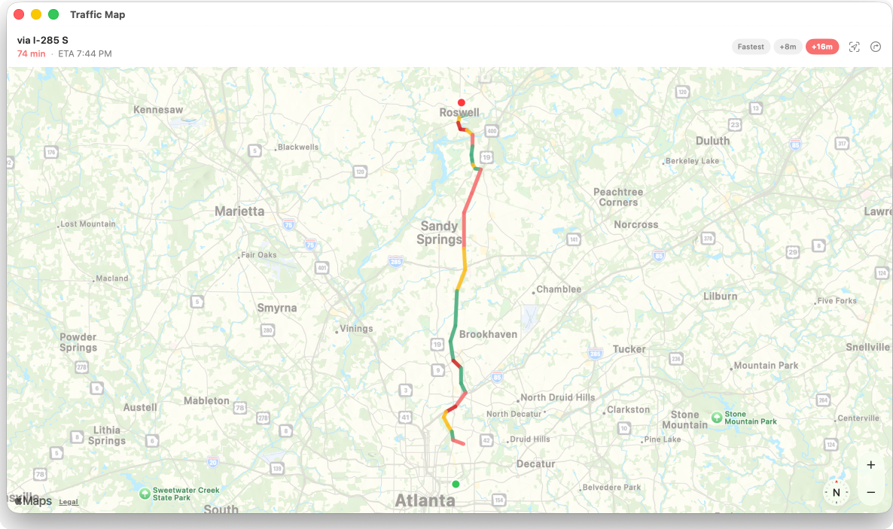
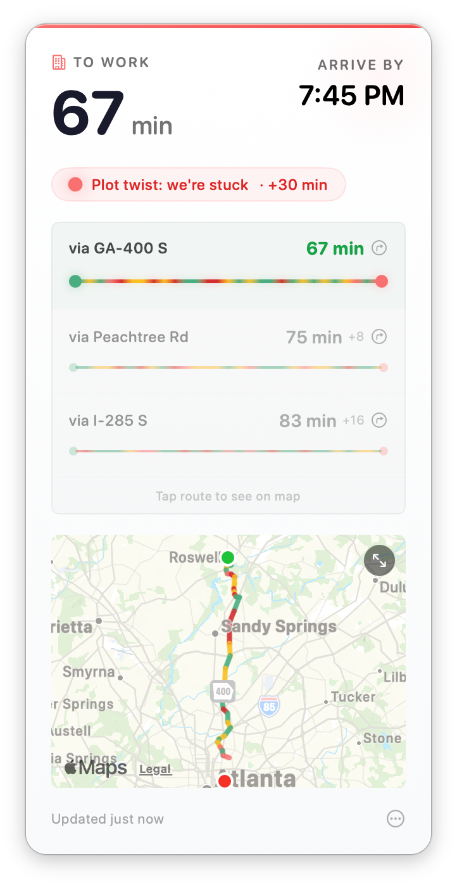

Arrival lives in your menu bar and shows real-time traffic for your saved routes. Know before you go — without opening an app.


Pop open the interactive map window to see exactly where congestion is building. No need to switch apps — it floats above your workspace whenever you need it.
Arrival surfaces traffic incidents along your route so you know whether it's a fender-bender, a closure, or just a rough patch to wait out.

Traffic has personality. So does Arrival.
Every route status uses human-readable language — not just a number — so you can make a real decision in half a second.
Free and open source. Works on macOS 13 Ventura and later.
Download the .dmg and drag to Applications.
Install via Homebrew Cask for easy updates.